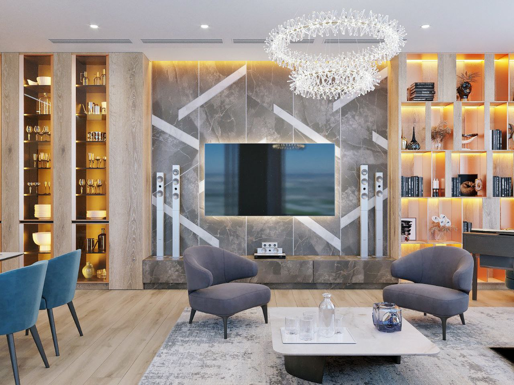

Светорасчет
Немного о терминологии
Рекомендуем ознакомиться со следующими терминами:
- Направленный свет — освещает только те поверхности и предметы, которые обращены к светильнику.
- Акцентный свет — используется для точечного освещения отдельных зон, предметов создается светильниками направленного света.
- Декоративный свет — устанавливается для украшения помещения или его элементов.
- Функциональный свет - применяется для освещения рабочих поверхностей или функциональных зон.
- Угол рассеивания — показывает, под каким углом будет распространяться свет от источника до поверхности.
- Цветопередача — качество передачи искусственным светом цветовых параметров предмета или поверхности относительно естественного освещения (измеряется в процентах).
- Люкс - единица измерения, обозначающая световой поток интенсивностью один люмен на квадратном метре поверхности.
- Пульсация светового потока — глубина и частота мерцания света, отражающая качество работы светильника.
- Светового поток - характеристика, оценивающая величину лучистой энергии, излучаемой источником света.
- Люмен - световой поток, излучаемый источником c силой света в одну Канделу, в телесном угле один Стерадиан. На упаковке светодиодной продукции обязательно указывается количество люменов, выдаваемых конкретным изделие.
- Сила света - плотность светового потока, которая равна отношению светового потока к телесному углу с вершиной в точке размещения источника свет.
Что представляет собо проект освещения
Проект состоит из расчетов параметров освещения, списка необходимого для установки оборудования и электрических коммуникаций. В его создании участвуют дизайнеры, архитекторы, проектировщики и прочие специалисты. Место размещения и количество осветительных элементов определяется на основе эскиза помещения, в котором указывается длина и высота стен, площадь пространства, расположение мебели, техники и других элементов интерьера, наличие окон, дверных проемов и объем естественного освещения.
Какие работы включены в проект
Проект освещения состоит из 3х этапов работ – световой концепции, светотехнического и электротехнического расчетов. Концепция формирует замысел в соответствии с архитектурной задумкой или коммерческой задачей объекта. Светотехническим расчетом определяют количество и расположение элементов освещения в соответствии с нормами и правилами. Типы светильников выбирают из каталога поставщиков. В ходе проектирования освещения учитывается яркость и угол рассеивания света.

Электротехнический расчет подразумевает создание схем подключений и питаний электроприборов, их максимальную возможную суммарную мощность, способ их управления, тип используемого кабеля, способ его прокладки. Соответствие расчетов СП обеспечивает безопасность подключения элементов к электросети здания, предупреждает повреждение проводки, способное возникнуть при перегрузки системы. Только после электротехнического расчета осуществляется окончательный выбор светильников из каталога поставщика.
Светотехнический расчет как основа проекта освещения

Большинство компаний делают упор на электротехническую часть проекта, пренебрегая светотехническим расчетом. В чем ошибка? Без расчета электротехнических параметров реализация проекта невозможна. Для клиента, основной целью которого является желание улучшить внешний вид и эргономичность помещения, эта часть работы считается вторичной. Он, в первую очередь, должен видеть результат проделанных работ – освещение, отвечающее всем требованиям пространства. Свет должен соответствовать потребностям людей, находящихся в помещении. Именно светотехнический расчет определяет, как будет выглядеть помещение после окончания монтажных работ. Для получения желаемого результата важно расположение светильников и их подбор в соответствии с нужными техническими характеристиками. Каждый элемент освещения имеет собственную мощность, температуру, индекс цветопередачи.